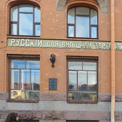

Новая станция метро · Васильевский остров
Станция метро «Горный институт»
Глубокая станция, открытая в декабре 2024-го: светильники-кристаллы, медные рёбра колонн у эскалаторов, панно о горном деле и круглые зеркала с названием.
- ₽ · до 1 500 ₽ на человека
- Новое в каталоге
- в 1 плане
Позвать сюда: Станция метро «Горный институт»Открыть в каталоге: Станция метро «Горный институт»Маршрут до места: Станция метро «Горный институт»
Адрес и детали
- Адрес
- Большой пр. В.О., у пересечения с 24-й–25-й линиями
Открыть на Яндекс Картах (в новой вкладке) - Метро
- м. Горный институт
- Район
- Васильевский остров
- Цена
- до 1 500 ₽ на человека
- Проверено
- работает — проверили в ноябре 2026
Планы с этим местом 1

- Музей «Аптека доктора Пеля» · Историческая аптека-музей · м. Василеостровская
- 24 минуты пешкомСтанция метро «Горный институт» · Новая станция метро
Склянки и шкафы старой аптеки на 7-й линии, потом новая станция «Горный институт» со светильниками-кристаллами.
Открыть план: Аптека Пеля и станция-кристаллПозвать сюда: Аптека Пеля и станция-кристалл
Фото: Olksolo, CC BY-SA 4.0 · Wikimedia Commons
Входит в подборки
Похожие рядом
Что ещё рядом
 Ледокол «Красин»Музей-корабль · ≈ 10 минут пешком
Ледокол «Красин»Музей-корабль · ≈ 10 минут пешком ЭрартаМузей современного искусства · ≈ 11 минут пешком
ЭрартаМузей современного искусства · ≈ 11 минут пешком- Центр современного искусства им. КурёхинаАрт-центр · ≈ 17 минут пешком
- Падел-клуб «Ракета»Падел-клуб · ≈ 22 минуты пешком
- Культурный квартал «Брусницын»Креативное пространство · ≈ 22 минуты пешком
- БабкаПекарня · ≈ 22 минуты пешком
Как позвать
- Выбери план, место или событие — в карточке адрес, цены и маршрут в Яндекс Картах.
- Нажми «Позвать сюда» — соберётся приглашение-игра для свидания или голосование для компании.
- Отправь ссылку в любой мессенджер: тебе ответят, а компания отметит, куда и когда может. Бесплатно и без регистрации.